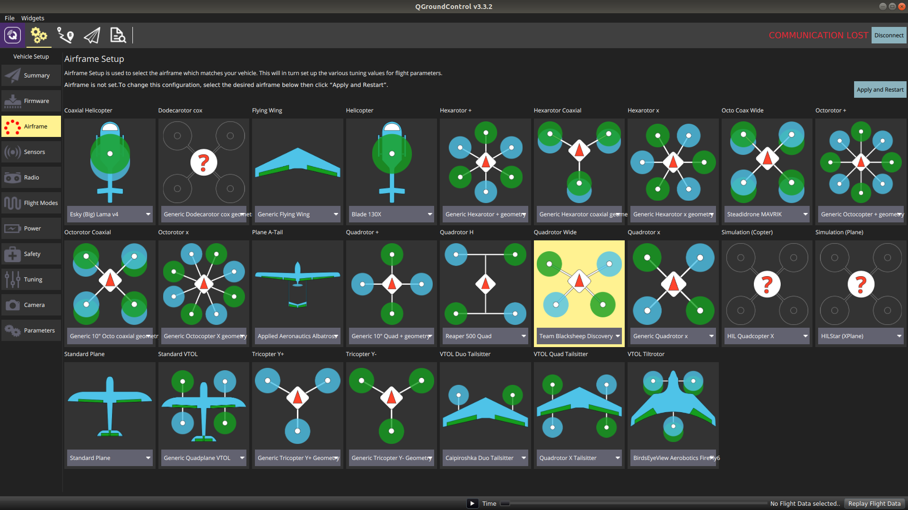

Airframe
Unmanned Air Vehicles (UAVs) is a broad term that encompass a wide variety of aircraft. In practice, UAVs are commonly grouped in three classes
-
Multicopters: Versatile, manoeuvrable, and capable of precise hovering, but limited in endurance or range
-
Fixed-Wings: Traditional planes are very efficient, and can easily achieve high speed or long distance flight
-
VTOLs: Vertical-Takeoff-Or-Landing aircraft combines the benefits of fixed-wing planes and multicopters
 QGroundControl airframe selection screen
Understanding different types of UAVs helps you choose/design an aircraft for the intended application. Once you have prepared your aircraft, the PX4 firmware must be matched to it in order to control it
Multicopters
Multicopters use multiple motors driving propellers to achieve lift. They manoeuvre in the air by adjusting motor speeds, i.e. motor differentials.
Tricopter
The Tricopter has 3 motors and a servo to tilt the axial motor to counteract a net motor torque imbalance.

- Tricopters were popular earlier, when motors were unreliable
- Performance is limited, and may not scale well to larger sizes
- Due to their use of a servo, they are difficult to setup and maintain.
Quadcopter
The quadcopter uses 4 motors

- Symmetric geometry makes for simple flight dynamics.
- Suitable for a wide range of applications, as they can be scaled up to larger sizes, and can carry diverse payloads
- Primary drawback is a lack of redundancy: Failure of even one single motor will cause total loss of control.
Quadcopter configurations and designations


-
Quadcopter X: Frame arms linked at the center of the airframe in X-shape. Most common configuration
-
Quadcopter +: Frame arms are aligned to the body axes, such that four arms form a plus shape. Unpopular because the front motor blocks forward looking cameras.
-
Quadcopter Wide: Based on Quadcopter X, with front arms spread apart to give a wide field of view to a forward looking camera.
-
Quadcopter H: Based on Quadcopter X, with frame arms built from single horizontal booms. Robust configuration that is especially easy to construct with basic craftsmanship.
Hexacopter and Octocopter
The hexacopter uses six motors, while the octocopter uses eight.


- Stable heavy-lifter configuration, widely used for aerial photography and agricultural applications
- Motor redundancy allows vehicle to remain airborne after one motor is disabled
- Primary drawback is inefficiency: Not suitable for long-range or high-speed applications
Hexa/Octocopter Coaxial (Y6 and X8)


Variations on the hexacopter and octocopter respectively, mounting two motors co-axially on each frame arm in a contra-rotating configuration. (e.g. upper motor CCW, lower motor CW)
- Very stable and geometrically compact configuration that makes for mechanical simplicity and high payload capacity
- Primary drawback is inefficiency: Approx. 10% penalty in propulsive efficiency compared to a hexacopter or octocopter.
VTOLs
VTOL aircraft usually combine a multicopter configuration with wings to achieve Vertical-Takeoff-Or-Landing while retaining the efficiency of fixed-wings.

Tailsitter
The tailsitter mounts two tractor motors on a flying wing. In fixed-wing mode, they fly like a simple twin-engine plane. In multicopter mode, the flying wing is oriented vertically, such that the motors thrust up for lift, and the wing ailerons redirect slipstream air for lateral control.

- Mechanically simplest way to achieve Vertical-Takeoff-Or-Landing.
- Primary drawback is unwieldiness: They take off nose vertically up but flies level, making payload mounting very complicated
Tiltrotor
The tiltrotor mounts two motors that can tilt up, plus one tail motor to provide stabilization during the motor-tilting process. Short wings provide lift during forward-flight.

- Efficient and versatile VTOL configuration that combines many valuable features of multicopters and planes
- Primary drawback is unreliability: The tiltrotor mechanism is complex, and the VTOL transition, during which the motor tilts, is hard to control
Quadplane
The quadplane mounts four motors in a Quadcopter X configurations to a fixed wing plane, which also has a motor for propulsion

- Most reliable VTOL configuration that uses no moving actuators or changing vehicle orientation in flight.
- Primary drawback is inefficiency: quadcopter motors are useless in fixed-wing mode, and plane motor is useless in multicopter mode